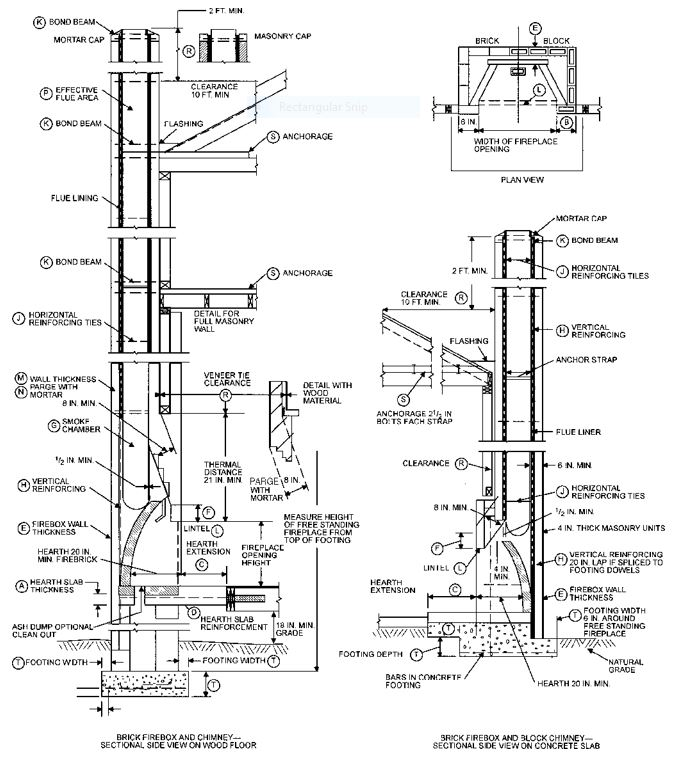
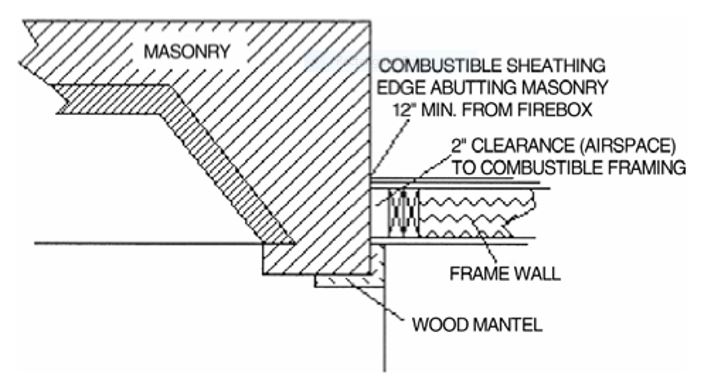
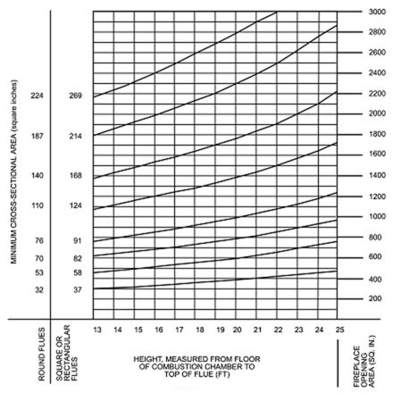
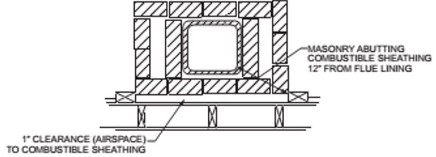

This chapter shall govern the materials, design, construction and quality of masonry.
2101.1.1 Referenced standards.
Where this code makes reference to the nationally recognized standard TMS 402, such standard shall be as modified for New York City in accordance with this chapter.
2101.2 Design methods.
Masonry shall comply with the provisions of TMS 402, TMS 403 or TMS 404, as well as the applicable requirements of this chapter.
2101.2.1 Masonry veneer.
Masonry veneer shall comply with the provisions of Chapter 14.
2101.3 Special inspection.
The special inspection of masonry shall be as defined in Chapter 17, or an itemized testing and inspection program shall be provided that meets or exceeds the requirements of Chapter 17.
Section BC 2102: Definitions and Notations
2102.1 General.
The following terms are defined in Chapter 2:
AAC MASONRY.
ARCHITECTURAL TERRA COTTA.
AREA.
Gross cross-sectional.
Net cross-sectional.
AUTOCLAVED AERATED CONCRETE (AAC).
BED JOINT.
BRICK.
Calcium silicate (sand lime brick).
Clay or shale.
Concrete.
CAST STONE.
CELL.
CHIMNEY.
Factory-built chimney.
Masonry chimney.
Metal chimney.
CHIMNEY TYPES.
High-heat appliance type.
Low-heat appliance type.
Medium-heat appliance type.
COLLAR JOINT.
DECORATIVE SHROUD.
DIMENSIONS.
Nominal.
Specified.
FIREPLACE.
FIREPLACE THROAT.
FLUE.
FLUE, APPLIANCE.
FLUE GASES.
FLUE LINER (LINING).
FOUNDATION PIER.
GROUT.
HEAD JOINT.
MASONRY.
Glass unit masonry.
Plain masonry.
Reinforced masonry.
Solid masonry.
Unreinforced (plain) masonry.
MASONRY UNIT.
Hollow.
Solid.
MORTAR.
MORTAR, SURFACE-BONDING.
PRESTRESSED MASONRY.
RUNNING BOND.
SPECIFIED COMPRESSIVE STRENGTH OF MASONRY, f 'm.
STONE MASONRY.
STRENGTH.
Design strength.
Nominal strength.
Required strength.
TIE, WALL.
TILE, STRUCTURAL CLAY.
WALL.
Cavity wall.
Dry-stacked, surface-bonded walls.
Parapet wall.
WYTHE.
NOTATIONS.
db = Diameter of reinforcement, inches (mm).
Fs = Allowable tensile or compressive stress in reinforcement, psi (MPa).
fr = Modulus of rupture, psi (MPa).
f 'AAC = Specified compressive strength of AAC masonry, the minimum compressive strength for a class of AAC masonry as specified in ASTM C 1386, psi (MPa).
f 'm = Specified compressive strength of masonry at age of 28 days, psi (MPa).
f 'mi = Specified compressive strength of masonry at the time of prestress transfer, psi (MPa).
K = The lesser of the masonry cover, clear spacing between adjacent reinforcement, or five times d
b
, inches (mm).
Ls = Distance between supports, inches (mm).
ld = Required development length or lap length of reinforcement, inches (mm).
P = The applied load at failure, pounds (N).
St = Thickness of the test specimen measured parallel to the direction of load, inches (mm).
Sw = Width of the test specimen measured parallel to the loading cylinder, inches (mm).
Section BC 2103: Masonry Construction Materials
2103.1 Masonry units.
Concrete masonry units, clay or shale masonry units, stone masonry units, glass unit masonry and AAC masonry units shall comply with Article 2.3 of TMS 602. Architectural cast stone shall conform to ASTM C1364 and TMS 504. Adhered manufactured stone masonry veneer units shall conform to ASTM C 1670.
Exception: Structural clay tile for nonstructural use in fireproofing of structural members and in wall furring shall not be required to meet the compressive strength specifications. The fire-resistance rating shall be determined in accordance with ASTM E 119 or UL 263 and shall comply with the requirements of Table 602 of this code.
2103.1.1 Second-hand units.
Second-hand masonry units shall not be reused unless they conform to the requirements of new units. The units shall be of whole, sound materials and free from cracks and other defects that will interfere with proper laying or use. Old mortar shall be cleaned from the unit before reuse.
Exception: Second-hand masonry units need not conform to the requirements for new units when their reuse is to comply with historic restoration standards or requirements of the New York City Landmarks Preservation Commission or the New York State Historic Preservation Office.
2103.2 Mortar.
Mortar for masonry construction shall comply with Section 2103.2.1, 2103.2.2, 2103.2.3 or 2103.2.4.
2103.2.1 Masonry mortar.
Mortar for use in masonry construction shall conform to Articles 2.1 and 2.6A of TMS 602.
2103.2.2 Surface-bonding mortar.
Surface-bonding mortar shall comply with ASTM C 887. Surface bonding of concrete masonry units shall comply with ASTM C 946.
2103.2.3 Mortars for ceramic wall and floor tile.
Portland cement mortars for installing ceramic wall and floor tile shall comply with ANSI A108.1A and ANSI A108.1B and be of the compositions indicated in Table 2103.2.3.
Premixed prepared portland cement mortars, which require only the addition of water and are used in the installation of ceramic tile, shall comply with ANSI A118.1. The shear bond strength for tile set in such mortar shall be as required in accordance with ANSI A118.1. Tile set in dry-set portland cement mortar shall be installed in accordance with ANSI A108.5.
2103.2.3.2 Latex-modified portland cement mortar.
Latex-modified portland cement thin-set mortars in which latex is added to dry-set mortar as a replacement for all or part of the gauging water that are used for the installation of ceramic tile shall comply with ANSI A118.4. Tile set in latex- modified portland cement shall be installed in accordance with ANSI A108.5.
2103.2.3.3 Epoxy mortar.
Ceramic tile set and grouted with chemical-resistant epoxy shall comply with ANSI A118.3. Tile set and grouted with epoxy shall be installed in accordance with ANSI A108.6.
2103.2.3.4 Furan mortar and grout.
Chemical-resistant furan mortar and grout that are used to install ceramic tile shall comply with ANSI A118.5. Tile set and grouted with furan shall be installed in accordance with ANSI A108.8.
2103.2.3.5 Modified epoxy-emulsion mortar and grout.
Modified epoxy-emulsion mortar and grout that are used to install ceramic tile shall comply with ANSI A118.8. Tile set and grouted with modified epoxy-emulsion mortar and grout shall be installed in accordance with ANSI A108.9.
2103.2.3.6 Organic adhesives.
Water-resistant organic adhesives used for the installation of ceramic tile shall comply with ANSI A136.1. The shear bond strength after water immersion shall be not less than 40 psi (275 kPa) for Type I adhesive and not less than 20 psi (138 kPa) for Type II adhesive, when tested in accordance with ANSI A136.1. Tile set in organic adhesives shall be installed in accordance with ANSI A 108.4.
2103.2.3.7 Portland cement grouts.
Portland cement grouts used for the installation of ceramic tile shall comply with ANSI A118.6. Portland cement grouts for tile work shall be installed in accordance with ANSI A108. 10.
2103.2.4 Mortar for adhered masonry veneer.
Mortar for use with adhered masonry veneer shall conform to ASTM C 270 for Type N or S, or shall comply with ANSI A118.4 for latex-modified portland cement mortar.
2103.3 Grout.
Grout shall comply with Article 2.2 of TMS 602.
2103.4 Metal reinforcement and accessories.
Metal reinforcement and accessories shall conform to Article 2.4 of TMS 602. Where unidentified reinforcement is approved for use, not less than three tension and three bending tests shall be made on representative specimens of the reinforcement from each shipment and grade of reinforcing steel proposed for use in the work.
Section BC 2104: Construction
2104.1 Masonry construction.
Masonry construction shall comply with the requirements of Sections 2104.1.1 through 2104.10, TMS 402, and TMS 602 or TMS 604.
2104.1.1 Lintels.
Minimum length of end support shall be 4 inches (102 mm).
2104.1.2 Support on wood.
Masonry shall not be supported on wood girders or other forms of wood construction except as permitted in Section 2304.12.
2104.1.3 Projecting masonry and cornices.
Unless structural support and anchorage are provided to resist the overturning moment, the center of gravity of projecting masonry or molded cornices shall lie within the middle one-third of the supporting wall. Terra cotta and metal cornices shall be provided with a structural frame of approved noncombustible material anchored in a manner approved by the commissioner.
2104.2 Cold weather construction.
The cold weather construction provisions of Article 1.8 C of TMS 602 shall be implemented when either the ambient temperature falls below 40°F (4°C) or the temperature of masonry units is below 40°F (4°C).
2104.2.1 Preparation.
No salt or other chemicals for the purpose of lowering the freezing temperature of water shall be permitted in the mortar or grout mix.
2104.3 Hot weather construction.
The hot weather construction provisions of Article 1.8 D of TMS 602 shall be implemented when the temperature exceeds 100°F (37.8°C), or 90°F (32.2°C) with a wind-velocity greater than 8 mph (12.9 km/hr).
2104.4 Wetting of brick.
Brick (clay or shale) at the time of laying shall require wetting if the unit's initial rate of water absorption exceeds 21.42 grams per 30 square inches (19 355 mm
2
) per minute or 0.025 ounce psi (1 g/645 mm
2
), as determined by ASTM C 67.
2104.5 Masonry construction bracing.
In accordance with Article 3.3E of TMS 602, the contractor shall design, provide, and install bracing that will assure stability of all masonry during construction. The contractor shall keep a bracing plan on site during all masonry construction. Bracing plans shall consider wind loads, initial and intermediate masonry strengths, and the contractor's ability to evacuate the site. Construction bracing for walls within a distance less than their height from adjoining properties or other unprotected and uncontrolled areas shall be designed for code prescribed wind loads and the bracing plan shall be signed and sealed by a licensed professional engineer. Construction bracing for walls may be designed using reduced loading in accordance with Section 1619. Such reduced loading shall only be permitted when an action plan meeting the requirements of Section 1619.3 is provided and maintained at the site.
2104.6 Parapet walls.
At a minimum, parapet walls shall meet the following requirements:
2104.6.1 Parapet wall construction.
All cells in the hollow masonry units and all joints in solid, cavity, or masonry-bonded hollow wall construction shall be filled solid. All corners of masonry parapet walls shall be reinforced with joint reinforcement or its equivalent at vertical intervals not greater than 16 inches (406 mm). Such reinforcement shall extend around the corner for at least 4 feet (1219 mm) in both directions, and splices shall be lapped at least 6 inches (152 mm).
2104.6.2 Parapet anchorage.
Parapets shall be reinforced vertically and shall be anchored to the roof and floors that provide lateral support for the wall in accordance with Section 1604.8.2.
2104.7 Floor and roof anchorage.
Floor and roof anchorage shall comply with Section 2104.7.1 through 2104.7.1.3.
2104.7.1 Bearing details.
Concentrated loads shall be supported upon construction of solid masonry, concrete, or masonry of hollow units with cells filled with mortar, grout, or concrete. In addition, construction supporting concentrated loads shall be of sufficient height to distribute safely the loads to the wall or column, or other adequate provisions shall be made to distribute the loads.
2104.7.1.1 Joists.
Solid construction for support under joists shall be at least 2 1/4 inches (57 mm) in height, and joists supported on such construction shall extend into the masonry at least 3 inches (76 mm).
2104.7.1.2 Beams.
Solid construction for support under beams, girders, or other concentrated loads shall be at least 4 inches (102 mm) in height, and the bearing of beams shall extend into the masonry at least 4 inches (102 mm).
2104.7.1.3 Isolated piers.
Isolated masonry piers shall be bonded as required for solid walls of the same thickness and shall be provided with adequate means for distributing the load at the top of the pier.
2104.8 Walls adjoining structural framing.
Walls adjoining structural framing shall comply with Sections 2104.8.1 and 2104.8.2.
2104.8.1 Use of existing walls.
An existing masonry wall may be used in the alteration or extension of a building provided that it meets the requirements of this code.
2104.8.2 Walls of insufficient thickness.
Existing walls of masonry units that are structurally sound, but that are of insufficient thickness when increased in height, may be strengthened by an addition of similar masonry units laid in Type M or S mortar. The foundations and lateral support shall be equivalent to those required for newly constructed walls under similar conditions. All such linings shall be thoroughly bonded into existing masonry by toothings to assure combined action of wall and lining. Toothings shall be distributed uniformly throughout the wall, and shall aggregate in vertical cross-sectional area at least 15 percent of the total surface area of the lining. Stresses in the masonry under the new conditions shall not exceed the allowable stresses.
2104.9 Isolation joints.
All non-participating masonry walls and veneers shall be constructed with adequate depth and width of isolation joints to prevent masonry distress induced by deflections, drifts, shortening, expansion, or other similar movements in the plane of the wall.
2104.10 Substitution.
Mortar shall not be substituted for grout where grout is specified on the construction documents.
Section BC 2105: Quality Assurance
2105.1 General.
A quality assurance program shall be used to ensure that the constructed masonry is in compliance with the approved construction documents.
The quality assurance program shall comply with the inspection and testing requirements of Chapter 17 and TMS 602.
2105.2 Submittals.
Submittals required by Article 1.5 of TMS 602 shall be sent to the applicant of record for review prior to use of the materials or methods of construction. In addition the contractor shall submit a Material Storage and Protection Plan.
Section BC 2106: Seismic Design
2106.1 Seismic design requirements for masonry.
Masonry structures and components shall comply with the requirements in Chapter 7 of TMS 402 depending on the structure's seismic design category as determined in Section 1613 of this code. All masonry walls, unless isolated on three edges from in-plane motion of the basic structural systems, shall be considered to be part of the seismic-force-resisting system.
2106.1.1 Non-participating masonry walls.
Masonry walls that are not part of the lateral force resisting system shall be isolated from the structure so that the vertical and lateral forces are not imparted to these elements. Isolation joints and connectors between these elements and the structure shall be designed to accommodate the design story drift.
Section BC 2107: Allowable Stress Design
2107.1 General.
The design of masonry structures using allowable stress design shall comply with Section 2106 and the requirements of Chapters 1 through 8 of TMS 402 except as modified by Sections 2107.2 through 2107.4 of this code.
2107.2 TMS 402, Section 6.1.6.1.1, lap splices.
As an alternative to Section 6.1.6.1.1, it shall be permitted to design lap splices in accordance with Section 2107.2.1 of the New York City Building Code.
2107.2.1 Lap splices.
The minimum length of lap splices for reinforcing bars in tension or compression, ld
, shall be
ld
= 0.002dbfs(Equation 21-1)
For SI: ld
= 0.29dbfs
but not less than 12 inches (305 mm). In no case shall the length of the lapped splice be less than 40 bar diameters.
where:
db = Diameter of reinforcement, inches (mm).
fs = Computed stress in reinforcement due to design loads, psi (MPa).
In regions of moment where the design tensile stresses in the reinforcement are greater than 80 percent of the allowable steel tension stress, Fs
, the lap length of splices shall be increased not less than 50 percent of the minimum required length, but need not be greater than 72d
b
. Other equivalent means of stress transfer to accomplish the same 50 percent increase shall be permitted. Where epoxy coated bars are used, lap length shall be increased by 50 percent.
2107.3 TMS 402, Section 6.1.6.1, splices of reinforcement.
Modify Section 6.1.6.1 as follows:
6.1.6.1 – Splices of reinforcement. Lap splices, welded splices or mechanical splices are permitted in accordance with the provisions of this section. All welding shall conform to AWS D1.4. Welded splices shall be of ASTM A706 steel reinforcement. Reinforcement larger than No. 9 (M #29) shall be spliced using mechanical connections in accordance with Section 6.1.6.1.3.
2107.4 TMS 402, Section 8.3.6, maximum bar size.
Add the following to Chapter 8:
8.3.6 – Maximum bar size. The bar diameter shall not exceed one-eighth of the nominal wall thickness and shall not exceed one-quarter of the least dimension of the cell, course or collar joint in which it is placed.
Section BC 2108: Strength Design of Masonry
2108.1 General.
The design of masonry structures using strength design shall comply with Section 2106 and the requirements of Chapters 1 through 7 and Chapter 9 of TMS 402, except as modified by Sections 2108.2 through 2108.3 of this code. Exception: AAC masonry shall comply with the requirements of Chapters 1 through 7 and Chapter 11 of TMS 402.
2108.2 TMS 402, Section 6.1.5.1.1, development.
Modify the second paragraph of Section 6.1.5.1.1 as follows:
The required development length of reinforcement shall be determined by Equation (6-1), but shall not be less than 12 inches (305 mm) and need not be greater than 72 d
b
.
2108.3 TMS 402, Section 6.1.6.1.1, splices.
Modify subsections 6.1.6.1.2 and 6.1.6.1.3 as follows:
6.1.6.1.2 – A welded splice shall have the bars butted and welded to develop at least 125 percent of the yield strength, f
y
, of the bar in tension or compression, as required. Welded splices shall be of ASTM A706 steel reinforcement. Welded splices shall not be permitted in plastic hinge zones of intermediate or special reinforced walls.
6.1.6.1.3 – Mechanical splices shall be classified as Type 1 or 2 in accordance with Section 18.2.7.1 of ACI 318. Type 1 mechanical splices shall not be used within a plastic hinge zone or within a beam-column joint of intermediate or special reinforced masonry shear walls. Type 2 mechanical splices are permitted in any location within a member.
Section BC 2109: Empirical Design of Masonry
2109.1 General.
Empirically designed masonry shall conform to this chapter or the requirements of Appendix A of TMS 402, except where otherwise noted in this section.
2109.1.1 Limitations.
The use of empirical design of masonry shall be limited as noted in Section A.1.2 of TMS 402. The use of dry-stacked, surface-bonded masonry shall be prohibited in Risk Category IV structures. In buildings that exceed one or more of the limitations of Section A.1.2 of TMS 402, masonry shall be designed in accordance with the engineered design provisions of Section 2101.2 or the foundation wall provisions of Section 1807.
2109.1.1.1 TMS 402, Section A.1.2.3, Wind.
Section A.1.2.3 of TMS 402 shall be modified as follows:
A.1.2.3 – Wind. Empirical requirements shall not apply to the design or construction of masonry for buildings, parts of buildings, or other structures to be located in areas where V
asd
as determined in accordance with Section 1609.3.1 of the New York City Building Code exceeds 110 mph.
2109.2 Surface-bonded walls.
Dry-stacked, surface-bonded concrete masonry walls shall comply with the requirements of Appendix A of TMS 402, except where otherwise noted in this section.
2109.2.1 Strength.
Dry-stacked, surface-bonded concrete masonry walls shall be of adequate strength and proportions to support all superimposed loads without exceeding the allowable stresses listed in Table 2109.2.1. Allowable stresses not specified in Table 2109.2.1 shall comply with the requirements of TMS 402.
Table 2109.2.1 Allowable Stress Gross Cross-Sectional Area for Dry-Stacked, Surface-Bonded Concrete Masonry Walls
Description
Maximum Allowable Stress (psi)
Compression standard block
45
Flexural tension
Horizontal span
30
Vertical span
18
Shear
10
For SI: 1 pound per square inch = 0.006895 Mpa.
2109.2.2 Construction.
Construction of dry-stacked, surface-bonded masonry walls, including stacking and leveling of units, mixing and application of mortar and curing and protection shall comply with ASTM C 946.
2109.3 Reserved.
2109.4 Thickness of masonry.
Minimum thickness requirements shall be based on nominal dimensions of masonry.
2109.4.1 Thickness of walls.
The thickness of masonry walls shall conform to the requirements of Section 2109.4.
2109.4.2 Minimum thickness.
The minimum thickness of masonry bearing walls more than one story high shall be 8 inches (203 mm) where the height floor to floor does not exceed 12 feet (3658 mm), the floor live load does not exceed 60 pounds per square foot (psf) (0.156 kg/m
2
), and the roof is designed so that the dead load imparts no lateral thrust to the wall. Bearing walls of one-story buildings shall not be less than 6 inches (152 mm) thick. However, the overall thickness of cavity or masonry-bonded hollow walls shall not be less than 8 inches (203 mm), including cavity.
2109.4.2.1 Walls above roof level.
Masonry walls above roof level, 12 feet (3658 mm) or less in height, enclosing stairways, machinery rooms, shafts, or penthouses, may be up to 8 inches (203 mm) thick and shall be considered as neither increasing the height nor requiring any increase in the thickness of the wall below.
2109.4.3 Partitions.
The minimum thickness for partitions shall be as follows:
Table 2109.4.3 Minimum Thickness of Masonry Partitions
Height of Walls
Thickness
8 ft. and under
2 in.
Over 8 ft. to 12 ft.
3 in.
Over 12 ft. to 16 ft.
4 in.
Over 16 ft. to 20 ft.
6 in.
Over 20 ft. to 24 ft.
8 in.
For SI: 1 inch = 25.4 mm, 1 foot = 304.8 mm.
2109.5 Horizontal joints.
All concrete framed buildings to be constructed over 35 feet (10 668 mm) in height (as measured from adjoining grade to the main roof level), whose exterior wythe are of cavity wall construction with steel lintels, shall have horizontal joints in the exterior wythe to prevent masonry distress induced by vertical shortening of the structural frame.
2109.5.1 Joint minimum thickness.
Unless substantiated as indicated by 2109.5.2, horizontal joints shall be 1/4 inch (6.4 mm) minimum thickness, with neoprene, polyethylene, or urethane gasket or equivalent joint filler filling the entire joint, except for a recess from the toe of the lintel angle to the exterior of the facing brick, to provide space for caulking. These joints shall be placed at each floor.
2109.5.2 Joint thickness by analysis.
The applicant of record shall submit an engineering analysis establishing that proposed building horizontal joints spaced further apart than in 2109.5.1 are sufficient to provide for the effects of vertical shortening of the structural frame.
Section BC 2110: Glass Unit Masonry
2110.1 General.
Glass unit masonry construction shall comply with Chapter 13 of TMS 402 and this section.
2110.1.1 Limitations.
Solid or hollow approved glass block shall not be used in fire walls, party walls, fire barriers, fire partitions, smoke barriers, or for load-bearing construction. Such blocks shall be erected with mortar and reinforcement in metal channel-type frames, structural frames, masonry or concrete recesses, embedded panel anchors as provided for both exterior and interior walls or other approved joint materials. Wood strip framing shall not be used in walls required to have a fire-resistance rating by other provisions of this code.
Exceptions:
1. Glass-block assemblies having a fire protection rating of not less than 3/4 hour shall be permitted as opening protectives in accordance with Section 716 in fire barriers, fire partitions and smoke barriers that have a required fire-resistance rating of 1 hour and do not enclose exit stairways or exit passageways.
2. Glass-block assemblies as permitted in Section 404.6, Exception 1.
(Am. L.L. 2023/077, 6/11/2023, eff. 6/11/2023)
Editor's note: For related unconsolidated provisions, see Appendix A at L.L. 2023/077.
Section BC 2111: Masonry Fireplaces
2111.1 General.
The construction of masonry fireplaces shall be in accordance with this section, Table 2111.1 and Figure 2111.1. All masonry fireplaces shall be installed, altered and maintained in buildings in conformity with the applicable provisions of the New York City Mechanical Code, the New York City Fuel Gas Code and the New York City Air Pollution Control Code. No new masonry fireplaces shall be permitted except those that burn the types of fuel allowed by Section 24-149.2 of the New York City Air Pollution Control Code.
Table 2111.1 Requirements for Masonry Fireplaces and Chimneys a
Item
Letter
Section
Item
Letter
Section
Hearth and hearth extension thickness
A
2111.10
Hearth extension (each side of opening)
B
2111.11
Hearth extension (front of opening)
C
2111.11
Firebox dimensions
—
2111.7
Hearth and hearth extension reinforcing
D
2111.10
Thickness of wall of firebox
E
2111.6
Distance from top of opening to throat
F
2111.8, 2111.8.1
Smoke chamber wall thickness dimensions
G
2111.9
Chimney vertical reinforcing
H
2111.4.1, 2113.3.1
Chimney horizontal reinforcing
J
2111.4.2, 2113.3.2
Fireplace lintel
L
2111.8
Chimney walls with flue lining
M
2113.11
Effective flue area (based on area of fireplace opening and chimney)
P
2113.16
Clearances From chimney From fireplace From combustible trim or materials Above roof
R
2113.19 2111.12 2111.13 2113.9
Anchorage strap Number required Embedment into chimney Fasten to Number of bolts
S
2111.5
2113.4
Footing Thickness Width
T
2111.3
For SI: 1 inch = 25.4 mm, 1 foot = 304.8 mm, 1 square foot = 0.0929 m
2
, 1 degree = 0.017 rad.
a. Letter references refer to Figure 2111.1, which shows examples of typical construction. For the actual mandatory requirements of the code, see the indicated section of text.

For SI: 1 inch = 25.4 mm, 1 foot = 304.8 mm.
Figure 2111.1 Fireplace and Chimney Details
(Am. L.L. 2015/038, 5/6/2015, eff. 5/6/2016)
2111.2 Fireplace drawings.
The construction documents shall describe in sufficient detail the location, size and construction of masonry fireplaces. The thickness and characteristics of materials and the clearances from walls, partitions and ceilings shall be indicated.
2111.3 Footings and foundations.
Footings for masonry fireplaces and their chimneys shall be constructed of reinforced concrete or solid masonry at least 12 inches (305 mm) thick and shall extend at least 6 inches (152 mm) beyond the face of the fireplace or foundation wall on all sides. Footings shall be founded on natural undisturbed earth or engineered fill below frost depth. In areas not subjected to freezing, footings shall be at least 12 inches (305 mm) below finished grade.
2111.3.1 Ash dump cleanout.
Cleanout openings, located within foundation walls below fireboxes, when provided, shall be equipped with ferrous metal or masonry doors and frames constructed to remain tightly closed, except when in use. Cleanouts shall be accessible and located so that ash removal will not create a hazard to combustible materials.
2111.3.2 Floor-supported fireplaces.
Fireplaces not supported on foundations shall be supported on noncombustible construction having a minimum fire-resistance rating of 3 hours for the members or assemblies in contact with the fireplace. Structural members or assemblies not directly in contact with the fireplace shall only be required to meet the fire-resistance rating specified elsewhere in this code.
2111.4 Seismic reinforcement.
In structures assigned to Seismic Design Category A or B, seismic reinforcement is not required. In structures assigned to Seismic Design Category C or D, masonry fireplaces shall be reinforced and anchored in accordance with Sections 2111.4.1, 2111.4.2 and 2111.5, and Table 2111.1, and Figure 2111.1.
2111.4.1 Vertical reinforcing.
For fireplaces with chimneys up to 40 inches (1016 mm) wide, four No. 4 continuous vertical bars, anchored in the foundation, shall be placed in the concrete between wythes of solid masonry or within the cells of hollow unit masonry and grouted in accordance with Section 2103.3. For fireplaces with chimneys greater than 40 inches (1016 mm) wide, two additional No. 4 vertical bars shall be provided for each additional 40 inches (1016 mm) in width or fraction thereof.
2111.4.2 Horizontal reinforcing.
Vertical reinforcement shall be placed enclosed within 1/4-inch (6.4 mm) ties or other reinforcing of equivalent net cross-sectional area, spaced not to exceed 18 inches (457 mm) on center in concrete; or placed in the bed joints of unit masonry at a minimum of every 18 inches (457 mm) of vertical height. Two such ties shall be provided at each bend in the vertical bars.
2111.5 Seismic anchorage.
Masonry fireplaces shall have their chimneys anchored in accordance with Section 2113.4.
2111.6 Firebox walls.
Masonry fireboxes shall be constructed of solid masonry units, hollow masonry units grouted solid, or stone. When a lining of firebrick at least 2 inches (51 mm) in thickness or other approved lining is provided, the minimum thickness of back and sidewalls shall each be 8 inches (203 mm) of solid masonry, including the lining. The approved lining shall be able to withstand a temperature of 2,000°F (1093°C) without cracking. The width of joints between firebricks shall be not greater than 1/4 inch (6.4 mm). When no lining is provided, the total minimum thickness of back and sidewalls shall be 12 inches (305 mm) of solid masonry. Firebrick shall conform to ASTM C 27 or ASTM C 1261 and shall be laid with medium-duty refractory mortar conforming to ASTM C 199.
2111.6.1 Steel fireplace units.
Steel fireplace units are permitted to be installed with solid masonry to form a masonry fireplace provided they are installed according to either the requirements of their listing or the requirements of this section. Steel fireplace units incorporating a steel firebox lining shall be constructed with steel not less than 1/4 inch (6.4 mm) in thickness, and an air-circulating chamber which is ducted to the interior of the building. The firebox lining shall be encased with solid masonry to provide a total thickness at the back and sides of not less than 8 inches (203 mm), of which not less than 4 inches (102 mm) shall be of solid masonry or concrete. Circulating air ducts employed with steel fireplace units shall be constructed of metal or masonry.
2111.7 Firebox dimensions.
The firebox of a masonry fireplace shall have a minimum depth of 20 inches (508 mm). The throat shall be not less than 8 inches (203 mm) above the fireplace opening. The throat opening shall not be less than 4 inches (102 mm) in depth. The cross-sectional area of the passageway above the firebox, including the throat, damper and smoke chamber, shall be not less than the cross-sectional area of the flue.
Exception: Rumford fireplaces shall be permitted provided that the depth of the fireplace is not less than 12 inches (305 mm) and at least one-third of the width of the fireplace opening, and the throat is not less than 12 inches (305 mm) above the lintel, and at least 1/20 the cross-sectional area of the fireplace opening.
2111.8 Lintel and throat.
Masonry over a fireplace opening shall be supported by a lintel of noncombustible material. The minimum required bearing length on each end of the fireplace opening shall be 4 inches (102 mm). The fireplace throat or damper shall be located not less than 8 inches (203 mm) above the top of the fireplace opening.
2111.8.1 Damper.
Masonry fireplaces shall be equipped with a ferrous metal damper located not less than 8 inches (203 mm) above the top of the fireplace opening. Dampers shall be installed in the fireplace or at the top of the flue venting the fireplace, and shall be operable from the room containing the fireplace. Damper controls shall be permitted to be located in the fireplace. The damper shall be able to withstand distortion from binding, cracking or corrosion when exposed to the fireplace operating temperature.
2111.9 Smoke chamber walls.
Smoke chamber walls shall be constructed of solid masonry units, hollow masonry units grouted solid, or stone. Corbeling of masonry units shall not leave unit cores exposed to the inside of the smoke chamber. The inside surface of corbeled masonry shall be parged smooth. Where no lining is provided, the total minimum thickness of front, back and sidewalls shall be 8 inches (203 mm) of solid masonry. When a lining of firebrick not less than 2 inches (51 mm) thick, or a lining of vitrified clay not less than 5/8 inch (15.9 mm) thick, is provided, the total minimum thickness of front, back and sidewalls shall be 6 inches (152 mm) of solid masonry, including the lining. Firebrick shall conform to ASTM C 27 or ASTM C 1261 and shall be laid with refractory mortar conforming to ASTM C 199. Vitrified clay linings shall conform to ASTM C 315.
2111.9.1 Smoke chamber dimensions.
The inside height of the smoke chamber from the fireplace throat to the beginning of the flue shall be not greater than the inside width of the fireplace opening. The inside surface of the smoke chamber shall not be inclined more than 45 degrees (0.76 rad) from vertical when prefabricated smoke chamber linings are used or when the smoke chamber walls are rolled or sloped rather than corbeled. When the inside surface of the smoke chamber is formed by corbeled masonry, the walls shall not be corbeled more than 30 degrees (0.52 rad) from vertical.
2111.10 Hearth and hearth extension.
Masonry fireplace hearths and hearth extensions shall be constructed of concrete, ceramic tile, masonry or equivalent, supported by noncombustible materials, and reinforced to carry their own weight and all imposed loads. No combustible material shall remain against the underside of hearths or hearth extensions after construction.
2111.10.1 Hearth thickness.
The minimum thickness of fireplace hearths shall be 4 inches (102 mm).
2111.10.2 Hearth extension thickness.
The minimum thickness of hearth extensions shall be 2 inches (51 mm).
Exception: When the bottom of the firebox opening is raised not less than 8 inches (203 mm) above the top of the hearth extension, a hearth extension of not less than 3/8-inch-thick (9.5 mm) brick, concrete, stone, tile or other approved noncombustible material is permitted.
2111.11 Hearth extension dimensions.
Hearth extensions shall extend not less than 16 inches (406 mm) in front of, and not less than 8 inches (203 mm) beyond, each side of the fireplace opening. Where the fireplace opening is 6 square feet (0.56 m
2
) or larger, the hearth extension shall extend not less than 20 inches (508 mm) in front of, and not less than 12 inches (305 mm) beyond, each side of the fireplace opening.
2111.11.1 Elevated or overhanging fireplace.
Where a fireplace is elevated or overhangs a floor, the hearth extension shall also extend beneath the entire area of the fireplace.
2111.12 Fireplace clearance.
Any portion of a masonry fireplace located in the interior of a building or within the exterior wall of a building shall have a clearance to combustibles of not less than 2 inches (51 mm) from the front faces and sides of masonry fireplaces and not less than 4 inches (102 mm) from the back faces of masonry fireplaces. The airspace shall not be filled, except to provide fireblocking in accordance with Section 2111.13.
Exceptions:
1. Masonry fireplaces listed and labeled for use in contact with combustibles in accordance with UL 127 and installed in accordance with the manufacturer's instructions are permitted to have combustible material in contact with their exterior surfaces.
2. When masonry fireplaces are constructed as part of masonry or concrete walls, combustible materials shall not be in contact with the masonry or concrete walls less than 12 inches (306 mm) from the inside surface of the nearest firebox lining.
3. Exposed combustible trim and the edges of sheathing materials, such as wood siding, flooring and drywall, are permitted to abut the masonry fireplace sidewalls and hearth extension, in accordance with Figure 2111.12, provided such combustible trim or sheathing is not less than 12 inches (306 mm) from the inside surface of the nearest firebox lining.
4. Exposed combustible mantels or trim is permitted to be placed directly on the masonry fireplace front surrounding the fireplace opening, provided such combustible materials shall not be placed within 6 inches (152 mm) of a fireplace opening. Combustible material within 12 inches (306 mm) of the fireplace opening shall not project more than 1/8 inch (3.2 mm) for each 1-inch (25 mm) distance from such opening.

For SI: 1 inch = 25.4 mm
Figure 2111.12 Illustration of Exception to Fireplace Clearance Provision
2111.13 Fireplace fireblocking.
All spaces between fireplaces and floors and ceilings through which fireplaces pass shall be fire-blocked with approved noncombustible material securely fastened in place. The fire-blocking of spaces between wood joists, beams or headers shall be to a depth of 1 inch (25 mm) and shall only be placed on strips of metal or metal lath laid across the spaces between combustible material and the chimney.
2111.14 Exterior air.
Factory-built or masonry fireplaces covered in this section shall be equipped with an exterior air supply to ensure proper fuel combustion unless the room is mechanically ventilated and controlled so that the indoor pressure is neutral or positive.
2111.14.1 Factory-built fireplaces.
Exterior combustion air ducts for factory-built fireplaces shall be listed components of the fireplace, and installed according to the fireplace manufacturer's instructions.
2111.14.2 Masonry fireplaces.
Listed combustion air ducts for masonry fireplaces shall be installed according to the terms of their listing and manufacturer's instructions.
2111.14.3 Exterior air intake.
The exterior air intake shall be capable of providing all combustion air from the exterior of the dwelling. The exterior air intake shall not be located within the garage, attic, basement or crawl space of the dwelling nor shall the air intake be located at an elevation higher than the firebox. The exterior air intake shall be covered with a corrosion-resistant screen of 1/4-inch (6.4 mm) mesh.
2111.14.4 Clearance.
Unlisted combustion air ducts shall be installed with a minimum 1-inch (25 mm) clearance to combustibles for all parts of the duct within 5 feet (1524 mm) of the duct outlet.
2111.14.5 Passageway.
The combustion air passageway shall be not less than 6 square inches (3870 mm
2
) and not more than 55 square inches (0.035 m
2
), except that combustion air systems for listed fireplaces or for fireplaces tested for emissions shall be constructed according to the fireplace manufacturer's instructions.
2111.14.6 Outlet.
The exterior air outlet is permitted to be located in the back or sides of the firebox chamber or within 24 inches (610 mm) of the firebox opening on or near the floor. The outlet shall be closable and designed to prevent burning material from dropping into concealed combustible spaces.
Section BC 2112: Masonry Heaters
2112.1 Definition.
A masonry heater is a heating appliance constructed of concrete or solid masonry, hereinafter referred to as "masonry," which is designed to absorb and store heat from a solid fuel fire built in the firebox by routing the exhaust gases through internal heat exchange channels in which the flow path downstream of the firebox may include flow in a horizontal or downward direction before entering the chimney and which delivers heat by radiation from the masonry surface of the heater.
2112.2 Installation.
Masonry heaters may be installed only when their use is permitted by the New York City Air Pollution Control Code. When such use is permitted, such appliances shall be operated in compliance with the New York City Air Pollution Control Code. Masonry heaters shall also be installed in accordance with this section and comply with one of the following:
1. Masonry heaters shall comply with the requirements of ASTM E 1602.
2. Masonry heaters shall be listed and labeled in accordance with UL 1482 or EN 15250 and installed in accordance with the manufacturer's instructions.
2112.3 Footings and foundation.
The firebox floor of a masonry heater shall be a minimum thickness of 4 inches (102 mm) of noncombustible material and be supported on a noncombustible footing and foundation in accordance with Section 2113.2.
2112.4 Seismic reinforcing.
In structures assigned to Seismic Design Category D, masonry heaters shall be anchored to the masonry foundation in accordance with Section 2113.3. Seismic reinforcing shall not be required within the body of a masonry heater with a height that is equal to or less than 3.5 times its body width and where the masonry chimney serving the heater is not supported by the body of the heater. Where the masonry chimney shares a common wall with the facing of the masonry heater, the chimney portion of the structure shall be reinforced in accordance with Section 2113.
2112.5 Masonry heater clearance.
Combustible materials shall not be placed within 36 inches (914 mm) or the distance of the allowed reduction method from the outside surface of a masonry heater in accordance with NFPA 211, Section 12.6, and the required space between the heater and combustible material shall be fully vented to permit the free flow of air around all heater surfaces.
Exceptions:
1. Where the masonry heater wall thickness is at least 8 inches (203 mm) of solid masonry and the wall thickness of the heat exchange channels is not less than 5 inches (127 mm) of solid masonry, combustible materials shall not be placed within 4 inches (102 mm) of the outside surface of a masonry heater. A clearance of not less than 8 inches (203 mm) shall be provided between the gas-tight capping slab of the heater and a combustible ceiling.
2. Masonry heaters listed and labeled in accordance with UL 1482 or EN 15250 and installed in accordance with the manufacturer's instructions.
(Am. L.L. 2023/077, 6/11/2023, eff. 6/11/2023)
Editor's note: For related unconsolidated provisions, see Appendix A at L.L. 2023/077.
Section BC 2113: Masonry Chimneys
2113.1 General.
The construction of masonry chimneys consisting of solid masonry units, hollow masonry units grouted solid, or stone shall be in accordance with this section.
Chimneys shall be designed and constructed so as to provide the necessary draft and capacity for each appliance connected to them to completely exhaust the products of combustion to the outside air. The temperature on adjacent combustible surfaces shall not be raised above 160°F (71°C). Chimney and vents shall be designed to resist the effects of condensation that would cause deterioration of the chimney or vent.
In any case, the outlet shall be arranged so that the flue gases are not directed so that they jeopardize people, overheat combustible structures, or enter building openings in the vicinity of the outlet. Gas-fired appliances shall be vented in accordance with this code, the New York City Fuel Gas Code and NFPA 54.
Chimneys shall not be supported by the equipment they serve unless such equipment has been specifically designed for such loads.
2113.1.1 Chimney adequacy for temperature and gas action.
Chimneys shall be of adequate structural strength and resistant to the temperatures to which they may be subjected and to the corrosive action of gases.
2113.1.2 Chimney linings.
The lining in chimneys shall not be considered as taking either compression or tension stresses.
2113.1.3 Chimney expansion and contraction.
Expansion and contraction in chimney walls due to temperature variations shall be accommodated solely by the use of steel reinforcing rings.
2113.1.4 Reinforcing rings.
Reinforcing rings shall be provided at all changes in wall thickness, at the top of the chimney, and above and below all flue openings.
2113.1.5 Existing chimneys and vents.
Existing chimneys and vents shall comply with the requirements of Section 28-104.13 of the Administrative Code and Sections 107.18 and 2113.1.5.1 through 2113.1.5.8 of this code.
2113.1.5.1 Responsibility of owner of taller building.
Whenever a building is erected, enlarged, or increased in height so that any portion of such building, except chimneys or vents, extends higher than the top of any existing chimneys or vents within 100 feet (30 480 mm), the owner of such new or altered building shall have the responsibility of altering such chimneys or vents to make them conform with the requirements of this chapter. A chimney or vent that is no longer connected with a fireplace or combustion or other equipment for which a chimney or vent was required, shall be exempt from this requirement. Such alterations shall be accomplished by one of the following means or a combination thereof:
1. Carry up the existing chimneys or vents to the height required in this chapter.
2. Offset such chimneys or vents to a distance beyond that required in this chapter from the new or altered building provided that the new location of the outlet of the offset chimney or vent shall otherwise comply with the requirements of this chapter.
Such requirements shall not dispense with or modify any additional requirements that may be applicable pursuant to rules of the New York City Department of Environmental Protection.
2113.1.5.1.1 Chimney and vent plan.
Applications for a new or altered building shall include a chimney and vent plan submitted pursuant to Section 107.18.
2113.1.5.2 Protection of draft.
After the alteration of a chimney or vent as required by this section, it shall be the responsibility of the owner of the new or altered building to provide any mechanical equipment or devices necessary to maintain the proper draft in the equipment.
2113.1.5.3 Written notification, plans and required documents.
The owner of the new or altered building shall notify the owner of any building that may require a chimney or vent to be altered. Notification, plans and required documents shall comply with the requirements of Sections 2113.1.5.3.1 through 2113.1.5.3.3.
2113.1.5.3.1 First notice.
Written notice in a form acceptable to the department shall be provided to the building owner not less than 60 days prior to a request for permit for construction on the new or altered building. Such notice shall include a request for access to determine the need to alter the existing chimney or vent and a description of such work. Notice shall be sent by regular mail and certified mail, return receipt requested. A copy of such return receipt shall be filed with the department.
2113.1.5.3.2 Second notice.
Written notice in a form acceptable to the department shall be provided to the building owner not more than 45 days following commencement of work after a permit has been issued for the new or altered building. Such notice shall include a request for access to determine the need to alter the existing chimney or vent and a description of such work. Notice shall be sent by regular mail and certified mail, return receipt requested. The second notice shall also be posted by a licensed process server at the public entrance of the building requiring a chimney or vent to be altered. A copy of such return receipt and proof of service by the licensed process server shall be filed with the department.
Exceptions:
1. A second notice shall not be required where an application to alter the affected chimney or vent has been filed with the department.
2. A second notice shall not be required where access is granted and conditions are observed that result in a determination that chimney or vent alteration is not required and a revised chimney and vent plan is submitted to the department.
2113.1.5.3.3 Plans and required documentation for alteration work.
Where access is granted and conditions are observed that result in a determination that chimney or vent alteration is required, plans for such alteration work shall be provided to the owner of the existing building and a request for written consent to submit construction documents and perform such work shall be made.
2113.1.5.4 Approval.
The construction documents for the proposed chimney extension, alteration or relocation shall be submitted to the department pursuant to Section 28-104 of the Administrative Code. No certificate of occupancy shall be issued for the new building pursuant to Section 28-118.23 of the Administrative Code until the work associated with such construction documents for the proposed chimney extension, alteration or relocation has been signed-off by the department.
Exceptions:
1. A certificate of occupancy may be issued where access is granted and conditions are observed that result in a determination that chimney or vent alteration is not required and a revised chimney or vent plan is submitted pursuant to Section 107.18 of the New York City Building Code documenting such.
2. A certificate of occupancy may be issued in accordance with Section 28-118.23, Exception 2 of the Administrative Code.
2113.1.5.5 Refusal of consent.
If consent is not granted by the owner of the affected building to do the alteration work required by this section, such owner shall signify his or her refusal in writing to the owner of the new or altered building and to the commissioner; and the owner of the new or altered building having provided the notices required by Section 2113.1.5.3 shall thereupon be released from any responsibility for the proper operation of the equipment due to loss of draft and for any health hazard or nuisance that may occur as a result of the new or altered building. Such responsibilities shall then be assumed by the owner of the previously constructed building. Similarly, should such owner fail to grant consent within 45 days from the date of the second notice or fail to signify his or her refusal, he or she shall then assume all responsibilities as prescribed above.
2113.1.5.6 Procedure.
It shall be the obligation of the owner of the new or altered building to:
1. Prepare and submit a chimney and vent plan to the department pursuant to Section 107.18.
2. Provide required notification pursuant to Section 2113.1.5.3.
3. Provide plans pursuant to Section 2113.1.5.3.3.
4. Prepare and submit construction documents to the department pursuant to Section 28-104 of the Administrative Code for the alteration of existing chimneys or vents which conform to the requirements of this chapter;
5. Obtain permit(s) for the proposed work in accordance with Section 28-105 of the Administrative Code;
6. Schedule this work so as to create a minimum of disturbance to the occupants of the affected building;
7. Provide such essential services as are normally supplied by the equipment while it is out of service;
8. Where necessary, support such extended chimneys, vents and equipment from this building or to carry up such chimneys or vents within his or her building;
9. Provide for the maintenance, repair, and/or replacement of such extensions and added equipment;
10. Make such alterations of the same material as the original chimney or vent so as to maintain the same quality and appearance, except where the owner of the chimney or vent shall give his or her consent to do otherwise. All work shall be done in such fashion as to maintain the architectural aesthetics of the existing building. Where there is practical difficulty in complying strictly with the provisions of this item, the commissioner may permit an equally safe alternative;
11. Comply with the tenant protection plan requirements of Section 28-120 of the Administrative Code; and
12. Comply with inspection and sign-off requirements of Section 28-116 of the Administrative Code.
2113.1.5.7 Existing violations.
Any existing violations on the previously constructed equipment shall be corrected by the owner of the equipment before any equipment is added or alterations made at the expense of the owner of the new or altered building.
2113.1.5.8 Variance.
The commissioner may grant a variance in accordance with the provisions of this code.
2113.2 Footings and foundations.
Footings for masonry chimneys shall be constructed of concrete or solid masonry not less than 12 inches (305 mm) thick and shall extend at least 6 inches (152 mm) beyond the face of the foundation or support wall on all sides. Footings shall be founded on natural undisturbed earth or engineered fill below frost depth. In areas not subjected to freezing, footings shall be not less than 12 inches (305 mm) below finished grade.
2113.3 Seismic reinforcing.
In structures assigned to Seismic Design Category A or B, or those exempt from seismic analysis, seismic reinforcement is not required. In structures assigned to Seismic Design Category C or D, masonry chimneys shall be analyzed and designed for seismic loading in accordance with TMS 402, and at a minimum shall be reinforced and anchored in accordance with Sections 2113.3.1, 2113.3.2, and 2113.4, Table 2111.1 and Figure 2111.1.
2113.3.1 Vertical reinforcement.
For chimneys up to 40 inches (1016 mm) wide, four No. 4 continuous vertical bars anchored in the foundation shall be placed in the concrete between wythes of solid masonry or within the cells of hollow unit masonry and grouted in accordance with Section 2103.3. Grout shall be prevented from bonding with the flue liner so that the flue liner is free to move with thermal expansion. For chimneys greater than 40 inches (1016 mm) wide, two additional No. 4 vertical bars shall be provided for each additional 40 inches (1016 mm) in width or fraction thereof.
2113.3.2 Horizontal reinforcement.
Vertical reinforcement shall be placed enclosed within 1/4-inch (6.4 mm) ties, or other reinforcing of equivalent net cross-sectional area, spaced not to exceed 18 inches (457 mm) on center in concrete, or placed in the bed joints of unit masonry, at not less than every 18 inches (457 mm) of vertical height. Two such ties shall be provided at each bend in the vertical bars.
2113.4 Seismic anchorage.
Masonry chimneys and foundations shall be anchored at each floor, ceiling or roof line more than 6 feet (1829 mm) above grade with two 3/16-inch by 1-inch (4.8 mm by 25 mm) straps embedded not less than 12 inches (305 mm) into the chimney. Straps shall be hooked around the outer bars and extend 6 inches (152 mm) beyond the bend. Each strap shall be fastened to not less than four floor joists with two 1/2-inch (12.7 mm) bolts.
Exception: Seismic anchorage is not required for the following:
1. In structures assigned to Seismic Design Category A or B.
2. Where the masonry fireplace is constructed completely within the exterior walls.
2113.5 Corbeling.
Masonry chimneys shall not be corbeled more than half of the chimney's wall thickness from a wall or foundation, nor shall a chimney be corbeled from a wall or foundation that is less than 12 inches (305 mm) in thickness unless it projects equally on each side of the wall, except that on the second story of a two-story dwelling, corbeling of chimneys on the exterior of the enclosing walls is permitted to equal the wall thickness. The projection of a single course shall not exceed one-half the unit height or one-third of the unit bed depth, whichever is less. No masonry shall be corbeled from hollow or cavity wall masonry units.
2113.6 Changes in dimension.
The chimney wall or chimney flue lining shall not change in size or shape within 6 inches (152 mm) above or below where the chimney passes through floor components, ceiling components or roof components.
2113.7 Offsets.
Where a masonry chimney is constructed with a fireclay flue liner surrounded by one wythe of masonry, the maximum offset shall be such that the centerline of the flue above the offset does not extend beyond the center of the chimney wall below the offset. Where the chimney offset is supported by masonry below the offset in an approved manner, the maximum offset limitations shall not apply. Each individual corbeled masonry course of the offset shall not exceed the projection limitations specified in Section 2113.5.
2113.8 Additional load.
Chimneys shall not support loads other than their own weight unless they are designed and constructed to support the additional load. Masonry chimneys are permitted to be constructed as part of the masonry walls or concrete walls of the building.
2113.9 Termination.
Chimneys serving appliances that operate at less than 600°F (316°C) shall extend at least 3 feet (914 mm) above the highest construction, such as a roof ridge, parapet wall, or penthouse, within 10 feet (3048 mm) of the chimney outlet, whether the construction is on the same building as the chimney or on another building. However, such constructions do not include other chimneys, vents, or open structural framing. Any chimney located beyond 10 feet (3048 mm) from such construction, but not more than the distance determined from Equation 21-2 and Table 2113.9, shall be at least as high as the construction.
Chimneys serving appliances that operate at between 600°F (316°C) and 1,000°F (538°C) shall extend at least 10 feet (3048 mm) above the highest construction, such as a roof ridge, or parapet wall or penthouse within 20 feet (6096 mm) of the chimney outlet, whether the construction is on the same building as the chimney or on another building. However, such construction does not include other chimneys, vents or open structural framing. Any chimney located beyond 20 feet (6096 mm) from such construction, but not more than the distance determined from Equation 21-2 and Table 2113.9, shall be at least as high as the construction.
D = F × √ A(Equation 21-2)
where:
D = Distance, in feet, measured from the center of the chimney outlet to the nearest edge of the construction.
F = Value determined from Table 2113.9.
A = Free area, in square inches, of chimney flue space.
Table 2113.9 "F" Factor for Determining Chimney Distances
Type of Fuel
"F" Factor
600°F (316°C) and less
600°F (316°C) to 1,000°F (538°C)
Greater than 1,000°F (538°C)
Gas
2
2
3
No. 2 Fuel Oil
2.5
2.5
3
No. 4, No. 6 Fuel Oils, Solid Fuels and Incinerators
3
3
3
2113.9.1 Chimney caps.
Masonry chimneys shall have a concrete, metal or stone cap, sloped to shed water, a drip edge and a caulked bond break around any flue liners in accordance with ASTM C 1283.
2113.9.2 Spark arrestors.
Where a spark arrestor is installed on a masonry chimney, the spark arrestor shall meet all of the following requirements:
1. The net free area of the arrestor shall be not less than four times the net free area of the outlet of the chimney flue it serves.
2. The arrestor screen shall have heat and corrosion resistance equivalent to 19-gage galvanized steel or 24-gage stainless steel.
3. Openings shall not permit the passage of spheres having a diameter greater than 1/2 inch (12.7 mm) nor block the passage of spheres having a diameter less than 3/8 inch (9.5 mm).
4. The spark arrestor shall be accessible for cleaning and the screen or chimney cap shall be removable to allow for cleaning of the chimney flue.
2113.9.3 Rain caps.
Termination caps shall not be permitted and a 3-inch (76 mm) minimum drain shall be installed to receive collected water. A positive means shall be provided to prevent water from entering the appliance.
Exception: Termination caps shall be permitted on listed factory-built chimneys.
2113.9.3.1 Decorative shrouds.
Decorative shrouds shall not be installed at the termination of factory-built chimneys except where such shrouds are listed and labeled for use with the specific factory-built chimney system and are installed in accordance with the manufacturers' installation instructions.
2113.10 Wall thickness.
Masonry chimney walls shall be constructed of concrete, solid masonry units or hollow masonry units grouted solid with not less than 4 inches (102 mm) nominal thickness, or 8 inches (203 mm) nominal thickness for chimney walls extending more than 3 feet (914 mm) above the highest lateral support point.
2113.11 Flue lining (material).
Masonry chimneys shall be lined. The lining material shall be appropriate for the type of appliance connected, according to the terms of the appliance listing and the manufacturer's instructions.
2113.11.1 Residential-type appliances and low heat appliances (general).
Flue lining systems shall comply with one of the following:
1. Clay flue lining complying with the requirements of ASTM C 315.
2. Listed chimney lining systems complying with UL 1777.
3. Factory-built chimneys or chimney units listed for installation within masonry chimneys.
4. Other approved materials that will resist corrosion, erosion, softening or cracking from flue gases and condensate at temperatures up to 1,800°F (982°C).
2113.11.1.1 Flue linings for specific appliances.
Flue linings other than those covered in Section 2113.11.1 intended for use with specific appliances shall comply with Sections 2113.11.1.2 through 2113.11.1.4 and Sections 2113.11.2 and 2113.11.3.
2113.11.1.2 Gas appliances.
Flue lining systems for gas appliances shall be in accordance with the New York City Fuel Gas Code, and ULC-S635.
2113.11.1.3 Pellet fuel-burning appliances.
Pellet fuel-burning appliances may be installed only when their use is permitted by the New York City Air Pollution Control Code. Any such appliances shall be listed and labeled and shall be installed in accordance with the terms of the listing. If permitted, such appliances shall be operated in compliance with the New York City Air Pollution Control Code. Flue lining and vent systems for use in masonry chimneys with pellet fuel-burning appliances shall be limited to flue lining systems complying with Section 2113.11.1 and pellet vents listed for installation within masonry chimneys. See Section 2113.11.1.5 for marking.
2113.11.1.4 Oil-fired appliances approved for use with L-vent.
Flue lining and vent systems for use in masonry chimneys with oil-fired appliances approved for use with Type L vent shall be limited to flue lining systems complying with Section 2113.11.1 and listed chimney liners complying with UL 641. See Section 2113.11.1.5 for marking.
2113.11.1.5 Notice of usage.
When a flue is relined with a material not complying with Section 2113.11.1, the chimney shall be plainly and permanently identified by a label attached to a wall, ceiling or other conspicuous location adjacent to where the connector enters the chimney. The label shall include the following message or equivalent language: "This chimney is for use only with (type or category of appliance) that burns (type of fuel). Do not connect other types of appliances."
2113.11.2 Masonry chimneys for medium-heat appliances.
Masonry chimneys for medium-heat appliances shall comply with the provisions of Sections 2113.11.2.1 through 2113.11.2.5.
2113.11.2.1 Construction.
Chimneys for medium-heat appliances shall be constructed of solid masonry units with walls not less than 8 inches (203 mm) thick, or with stone masonry not less than 12 inches (305 mm) thick. Chimneys for medium-heat appliances constructed with radial brick may be permitted to have different requirements. Design of all such chimneys shall be submitted to the commissioner for approval.
2113.11.2.2 Lining.
Masonry chimneys shall be lined with an approved medium-duty refractory brick not less than 4 1/2 inches (114 mm) thick laid on the 4 1/2-inch bed (114 mm) in an approved medium-duty refractory mortar. The lining shall start 2 feet (610 mm) or more below the lowest chimney connector entrance. Chimneys terminating 25 feet (7620 mm) or less above a chimney connector entrance shall be lined to the top.
2113.11.2.3 Multiple passageway.
Masonry chimneys containing more than one passageway shall have the liners separated by a minimum 4-inch-thick (102 mm) concrete or solid masonry wall.
2113.11.2.4 Termination height.
Chimneys serving appliances that operate at greater than 1,000°F (538°C) shall extend at least 20 feet (6096 mm) above the highest construction, such as roof ridge, parapet wall, penthouse, or other obstruction within 50 feet (15 240 mm) of the chimney outlet, whether the construction is on the same building as the chimney or in another building. However, such construction does not include other chimneys, vents, or open structural framing. Any chimney located beyond 50 feet (15 240 mm) from such construction but not more than the distance determined from Equation 21-2 and Table 2113.9, shall be at least as high as the construction.
2113.11.2.5 Clearance.
A minimum clearance of 4 inches (102 mm) shall be provided between the exterior surfaces of a masonry chimney for medium-heat appliances and combustible material.
2113.11.3 Masonry chimneys for high-heat appliances.
Masonry chimneys for high-heat appliances shall comply with the provisions of Sections 2113.11.3.1 through 2113.11.3.4.
2113.11.3.1 Construction.
Chimneys for high-heat appliances shall be constructed with double walls of solid masonry units or of concrete, each wall to be not less than 8 inches (203 mm) thick with a minimum airspace of 2 inches (51 mm) between the walls. Alternate chimney designs for high-heat appliances constructed with radial brick shall be permitted subject to the approval of the commissioner.
2113.11.3.2 Lining.
The inside of the interior wall shall be lined with an approved high-duty refractory brick, not less than 4 1/2 inches (114 mm) thick laid on the 4 1/2-inch bed (114 mm) in an approved high-duty refractory mortar. The lining shall start at the base of the chimney and extend continuously to the top.
2113.11.3.3 Termination height.
Masonry chimneys for high-heat appliances shall extend not less than 20 feet (6096 mm) above the highest construction, such as roof ridge, parapet wall, penthouse, or other obstruction within 50 feet (15 240 mm) of the chimney outlet, whether the construction is on the same building as the chimney or on another building. However, such constructions do not include other chimneys, vents, or open structural framing. Any chimney located beyond 50 feet (15 240 mm) from such construction but not more than the distance determined from Equation 21-2 and Table 2113.9, shall be at least as high as the construction.
2113.11.3.4 Clearance.
Masonry chimneys for high-heat appliances shall have approved clearance from buildings and structures to prevent overheating combustible materials, permit inspection and maintenance operations on the chimney and prevent danger of burns to persons.
2113.12 Clay flue lining (installation).
Flue liners shall be installed in accordance with ASTM C 1283 and extend from a point not less than 8 inches (203 mm) below the lowest inlet or, in the case of fireplaces, from the top of the smoke chamber to a point above the enclosing walls. The lining shall be carried up vertically, with a maximum slope no greater than 30 degrees (0.52 rad) from the vertical.
Clay flue liners shall be laid in medium-duty nonwater-soluble refractory mortar conforming to ASTM C 199 with tight mortar joints left smooth on the inside and installed to maintain an airspace or insulation not to exceed the thickness of the flue liner separating the flue liners from the interior face of the chimney masonry walls. Flue lining shall be supported on all sides. Only enough mortar shall be placed to make the joint and hold the liners in position.
2113.13 Additional requirements.
Masonry chimneys shall also comply with the additional requirements of Sections 2113.13.1 and 2113.13.2.
2113.13.1 Listed materials.
Listed materials used as flue linings shall be installed in accordance with the terms of their listings and the manufacturer's instructions.
2113.13.2 Space around lining.
The space surrounding a chimney lining system or vent installed within a masonry chimney shall not be used to vent any other appliance.
Exception: This shall not prevent the installation of a separate flue lining in accordance with the manufacturer's instructions.
2113.14 Multiple flues.
When two or more flues are located in the same chimney, masonry wythes shall be built between adjacent flue linings. The masonry wythes shall be at least 4 inches (102 mm) thick and bonded into the walls of the chimney.
Exception: When venting only one appliance, two flues are permitted to adjoin each other in the same chimney with only the flue lining separation between them. The joints of the adjacent flue linings shall be staggered not less than 4 inches (102 mm).
2113.15 Flue area (appliance).
Chimney flues shall not be smaller in area than the area of the connector from the appliance. Chimney flues connected to more than one appliance shall be not less than the area of the largest connector plus 50 percent of the areas of additional chimney connectors.
Exceptions:
1. Chimney flues serving oil-fired appliances sized in accordance with the New York City Mechanical Code and NFPA 31.
2. Chimney flues serving gas-fired appliances sized in accordance with the New York City Fuel Gas Code.
2113.16 Flue area (masonry fireplace).
Flue sizing for chimneys serving fireplaces shall be in accordance with Section 2113.16.1 or 2113.16.2.
Table 2113.16(1) Net Cross-Sectional Area of Round Flue Sizes a
Flue Size, Inside Diameter (inches)
Cross-Sectional Area (square inches)
Flue Size, Inside Diameter (inches)
Cross-Sectional Area (square inches)
6
28
7
38
8
50
10
78
10 3/4
90
12
113
15
176
18
254
For SI: 1 inch = 25.4 mm, 1 square inch = 645.16 mm
2
a. Flue sizes are based on ASTM C 315.
Table 2113.16(2) Net Cross-Sectional Area of Square and Rectangular Flue Sizes a
Flue Size, Outside Nominal Dimensions (inches)
Cross-Sectional Area (square inches)
Flue Size, Outside Nominal Dimensions (inches)
Cross-Sectional Area (square inches)
4.5 × 8.5
23
4.5 × 13
34
8 × 8
42
8.5 × 8.5
49
8 × 12
67
8.5 × 13
76
12 × 12
102
8.5 × 18
101
13 × 13
127
12 × 16
131
13 × 18
173
16 × 16
181
16 × 20
222
18 × 18
233
20 × 20
298
20 × 24
335
24 × 24
431
For SI: 1 inch = 25.4 mm, 1 square inch = 645.16 mm
2
a. Flue sizes are based on ASTM C 315.

For SI: 1 inch = 25.4 mm, 1 square inch = 645 mm
2
.
Figure 2113.16 Flue Sizes for Masonry Chimneys
2113.16.1 Minimum area.
Round chimney flues shall have a minimum net cross-sectional area of not less than 1/12 of the fireplace opening. Square chimney flues shall have a minimum net cross-sectional area of not less than 1/10 of the fireplace opening. Rectangular chimney flues with an aspect ratio less than 2 to 1 shall have a minimum net cross-sectional area of not less than 1/10 of the fireplace opening. Rectangular chimney flues with an aspect ratio of 2 to 1 or more shall have a minimum net cross-sectional area of not less than 1/8 of the fireplace opening.
2113.16.2 Determination of minimum area.
The minimum net cross-sectional area of the flue shall be determined in accordance with Figure 2113.16. A flue size providing not less than the equivalent net cross-sectional area shall be used. Cross-sectional areas of clay flue linings are as provided in Tables 2113.16(1) and 2113.16(2) or as provided by the manufacturer or as measured in the field. The height of the chimney shall be measured from the firebox floor to the top of the chimney flue.
2113.17 Inlet.
Inlets to masonry chimneys shall enter from the side. Inlets shall have a thimble of fireclay, rigid refractory material or metal that will prevent the connector from pulling out of the inlet or from extending beyond the wall of the liner.
2113.18 Masonry chimney cleanout openings.
Cleanout openings shall be provided within 6 inches (152 mm) of the base of each flue within every masonry chimney. The upper edge of the cleanout shall be located not less than 6 inches (152 mm) below the lowest chimney inlet opening. The height of the opening shall be not less than 6 inches (152 mm). The cleanout shall be provided with a noncombustible cover.
Exception: Chimney flues serving masonry fireplaces, where cleaning is possible through the fireplace opening.
2113.19 Chimney clearances.
Any portion of a masonry chimney located in the interior of the building or within the exterior wall of the building shall have a minimum airspace clearance to combustibles of 2 inches (51 mm). Chimneys located entirely outside the exterior walls of the building, including chimneys that pass through the soffit or cornice, shall have a minimum airspace clearance of 1 inch (25 mm). The airspace shall not be filled, except to provide fireblocking in accordance with Section 2113.20.
Exceptions:
1. Masonry chimneys equipped with a chimney lining system listed and labeled for use in chimneys in contact with combustibles in accordance with UL 1777 and ULC-S635, and installed in accordance with the manufacturer's instructions, are permitted to have combustible material in contact with their exterior surfaces.
2. Where masonry chimneys are constructed as part of masonry walls, combustible materials shall not be in contact with the masonry wall less than 12 inches (305 mm) from the inside surface of the nearest flue lining.
3. Exposed combustible trim and the edges of sheathing materials, such as wood siding, are permitted to abut the masonry chimney sidewalls, in accordance with Figure 2113.19, provided such combustible trim or sheathing is not less than 12 inches (305 mm) from the inside surface of the nearest flue lining. Combustible material and trim shall not overlap the corners of the chimney by more than 1 inch (25 mm).

Figure 2113.19 Illustration of Exception to Chimney Clearance Provision
2113.19.1 Additional requirements for clearance.
1. Trimmers shall be not less than 5 inches (127 mm) from the inside face of the concrete or masonry chimney wall. Finished flooring shall have at least one-half inch clearance from chimney walls.
2. A clearance of at least 2 inches (51 mm) shall be provided between the exterior surfaces of interior masonry chimneys for all wood- burning appliances.
3. No combustible lathing, furring, or plaster grounds shall be placed against a chimney at any point more than 1 1/2 inches (38 mm) from the corner of the chimney; but this shall not prevent plastering directly on masonry or on metal lath and metal furring nor shall it prevent placing chimneys for low temperature equipment entirely on the exterior of a building against the sheathing.
2113.20 Chimney fireblocking.
All spaces between chimneys and floors and ceilings through which chimneys pass shall be fireblocked with noncombustible material securely fastened in place. The fireblocking of spaces between wood joists, beams or headers shall be self-supporting or be placed on strips of metal or metal lath laid across the spaces between combustible material and the chimney.
2113.21 Test run.
All new chimneys shall be test run by the registered design professional responsible for the testing under standard conditions to demonstrate fire safety and the complete exhausting of smoke and the products of combustion to the outer air. The results of such test run shall be certified as correct by the design professional engineer responsible for the test and shall be submitted in writing to the department.
2113.22 Requirement of a smoke test.
A smoke test shall be made as outlined below. Any faults or leaks found shall be corrected. Such smoke test shall be witnessed by a representative of the commissioner. In lieu thereof, the commissioner may accept the test report of the design professional engineer responsible for the test, which shall be submitted in writing to the department.
2113.22.1 Smoke test.
To determine the tightness of chimney construction, a smoke test shall be made in accordance with the following conditions and requirements:
1. The equipment, materials, power and labor necessary for such test shall be furnished by, and at the expense of, the owner or holder of the work permit.
2. If the test shows any evidence of leakage or other defects, such defects shall be corrected in accordance with the requirement of this chapter and the test shall be repeated until the results are satisfactory.
3. Method of test. The chimney shall be filled with a thick penetrating smoke produced by one or more smoke machines, or smoke bombs, or other equivalent method. As the smoke appears at the stack opening on the roof, such opening shall be tightly closed, and a pressure equivalent to 1/2 inch (12.7 mm) column of water measured at the base of the stack shall be applied. The test shall be conducted for a length of time sufficient to permit the inspection of the chimney.
Section BC 2114: Structural Integrity Requirements
2114.1 General.
Load-bearing masonry structures shall be reinforced to meet all of the requirements of this section. However, reinforcement provided for gravity, seismic or wind forces or for other purposes may be regarded as satisfying part of, or the whole of, these requirements. Reinforcement provided for one requirement may be counted towards the other requirements.
2114.2 Continuity and ties.
Load-bearing masonry structures shall be reinforced to obtain a continuous system of vertical and horizontal ties. Continuity of all ties shall be ensured by providing lap, welded or mechanical tension splices. The following requirements shall be met for walls, columns and piers:
2114.2.1 Horizontal.
At each floor and roof level, continuous horizontal ties shall be provided in all load-bearing masonry walls, and around the perimeter of the building. Minimum horizontal tie reinforcement shall be not less than the equivalent of two No. 4 bars.
2114.2.1.1 Location of horizontal ties.
Ties shall be located within the thickness of walls or beams, where they occur, or within 1 foot (305 mm) of the edge of slab, where walls or beams do not occur.
2114.2.1.2 End connections of horizontal ties.
All horizontal ties shall be terminated in a perpendicular horizontal tie. Where no perpendicular horizontal tie exists within 4 feet (1219 mm) of the end of a wall, the horizontal tie shall be anchored at the end of the wall. The vertical reinforcement at the end of such walls shall not be less than two No. 4 bars placed within 16 inches (406 mm) of the end of the wall. This vertical reinforcement shall be continuous from the lowest to highest level of the wall, and anchored at each end in a horizontal tie or the foundation element.
2114.2.2 End connections.
Where slab or beam elements are supported on a masonry wall, column or pier, the connection shall be designed to sustain an axial tension capacity equal to the greater of the vertical shear capacity of the connected element at either end or two percent of the maximum factored vertical dead and live load in the compression masonry element. The design of the end connections shall ensure the transfer of such loads to horizontal or vertical ties.
Where more than one element frames in one direction, none of the elements or connections shall have an axial tension capacity of less than one percent of the vertical load.
For the design of the connections, the transverse shear force and the axial tensile force need not be considered to act simultaneously.
The reinforcement of the end connections shall be equivalent to at least one No. 4 bar, at a maximum spacing of 24 inches (610 mm) on center. Where end connections occur at a masonry pier or column, reinforcement equivalent to a minimum of four fully developed No. 4 bars shall be provided. The reinforcement shall be distributed around the perimeter of the column or pier. The minimum anchorage into both the slab and the masonry compression element shall be equivalent to the capacity of the fully developed No. 4 bar.
Where the floor extends on both sides of a bearing wall, the portion of the tie within the slab shall alternate between both sides.
2114.2.3 Vertical ties.
Each column, pier and wall shall be vertically tied continuously from its lowest to highest level. The vertical reinforcement shall be terminated in a horizontal tie or foundation or their equivalent. Where openings in bearing walls greater than 24 inches (610 mm) in height occur, ties shall be provided at each side of the opening that extend and are anchored in the masonry above and below the opening. Vertical ties shall be placed on both sides of control joints in bearing walls.
2114.2.3.1 Vertical ties reinforcing.
Vertical tie reinforcing shall not be less than the equivalent of one No. 4 bar, at a maximum spacing of 48 inches (1219 mm) on center. A minimum of four continuous No. 4 bars shall be provided per masonry column or pier.